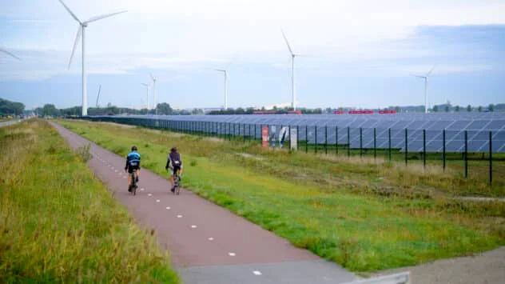

About EnvWatch
EnvWatch is a long-time leader in environmental news. Founded in 2005 as an Bellevue-based environmental newspaper, today we are a digital platform still dedicated to publishing quality, science-based content on environmental issues, causes, and solutions. While we’ve grown from a grassroots newspaper of 80,000 print copies to a site with a digital audience of more than two million monthly readers, we are still committed to our founding principle: creating a sustainable future.
Our Mission
EnvWatch is a nonprofit, independent publication that reports on environmental issues and solutions with the goal of informing and empowering people to make a difference. We are editorially independent, meaning we set our own agenda. Our journalism is free from commercial bias and not influenced by billionaire owners, politicians, or shareholders. No one edits our editor. No one steers our opinion. This is important because it enables us to give a voice to the voiceless, challenge the powerful, and hold them to account. It’s what makes us different to so many others in the media, at a time when factual, honest reporting is critical.
Our Team

Jane Doe, Editor in Chief
Jane joined EnvWatch in 2010 as a reporter and has since served as a senior editor, managing editor, and deputy editor. She has covered a wide range of environmental issues, including climate change, energy, wildlife, oceans, and public lands. She has also reported extensively on environmental justice issues and the intersection of the environment and national security. Jane has a bachelor’s degree in environmental science from the University of Washington and a master’s degree in journalism from the University of California, Berkeley. She lives in Seattle.

John Doe, Senior Editor
John joined EnvWatch in 2015 as a reporter and has since served as a senior editor, managing editor, and deputy editor. He has covered a wide range of environmental issues, including climate change, energy, wildlife, oceans, and public lands. He has also reported extensively on environmental justice issues and the intersection of the environment and national security. John has a bachelor’s degree in environmental science from the University of Washington and a master’s degree in journalism from the University of California, Berkeley. He lives in Seattle.